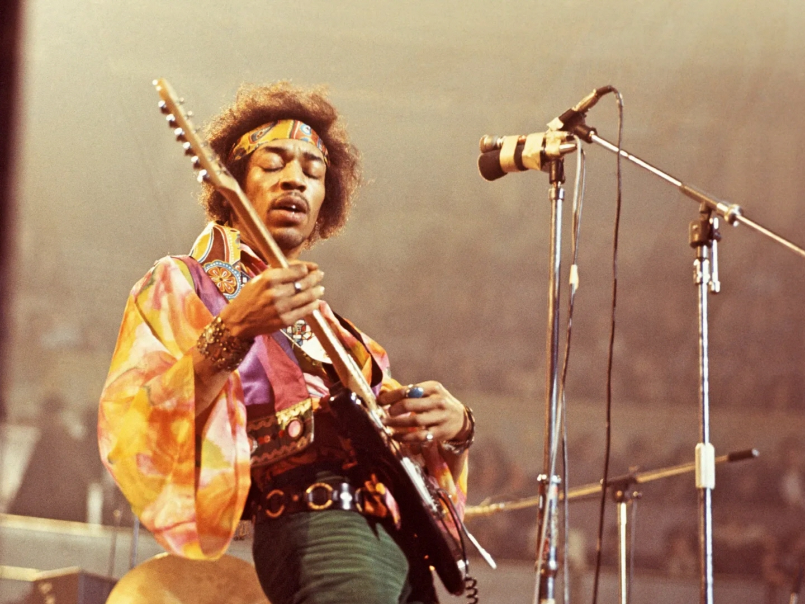
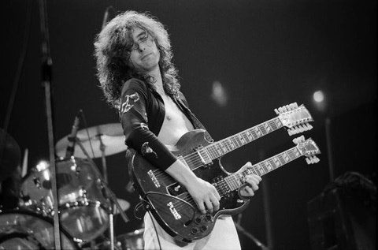
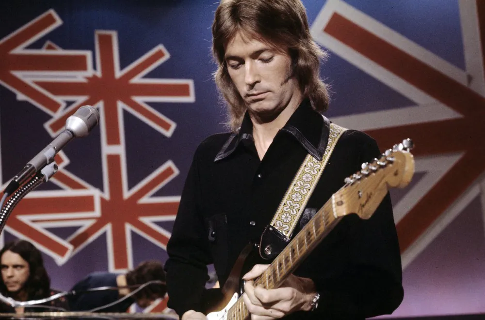

① 지미 헨드릭스 Jimi Hendrix - 일렉트릭 기타의 혁명가
[연주 스타일 분석]
사이케델릭 록과 블루스의 융합
오른손잡이용 기타를 뒤집어서 왼손으로 연주하는 독창적인 방식을 선보였습니다. 이빨로 줄을 튕기거나 기타를 등 뒤로 돌려 연주하는 화려한 퍼포먼스는 물론, 피드백 소음까지 음악으로 승화시킨 기타리스트입니다.
[시그니처 장비]
- 펜더 스트라토캐스터
- 마샬 진공관 앰프
- 퍼즈 페이스 이펙터, 와와 페달

전설적인 기타리스트의 장비와 스타일 연구
유명 기타리스트를 살펴보면 단순히 빠르게 치는 기술보다 자신만의 톤, 장비 선택, 연주 습관이 중요하다는 것을 알 수 있습니다. 아래 내용은 연주 스타일과 시그니처 장비를 중심으로 정리했습니다.
사이케델릭 록과 블루스의 융합
오른손잡이용 기타를 뒤집어서 왼손으로 연주하는 독창적인 방식을 선보였습니다. 이빨로 줄을 튕기거나 기타를 등 뒤로 돌려 연주하는 화려한 퍼포먼스는 물론, 피드백 소음까지 음악으로 승화시킨 기타리스트입니다.

헤비하고 리드미컬한 기타 리프 제조기
레드 제플린의 리더로 현대 하드록과 헤비메탈의 뼈대가 되는 전설적인 록 리프들을 만들었습니다. 라이브 공연에서는 바이올린 활로 기타 줄을 켜는 실험적인 연주도 보여 주었습니다.

슬로우 핸드와 감성적인 밴딩
화려한 속주보다 음 하나하나에 감정을 눌러 담는 정교한 초킹과 정통 블루스 기반 솔로가 특징입니다. 손이 느려 보이지만 완벽한 타이밍에 음을 짚는다고 해서 슬로우 핸드라는 별명을 얻었습니다.

원맨 밴드 스타일의 핑거피킹
피크를 쓰지 않고 엄지와 나머지 손가락으로 멜로디, 베이스, 퍼커션을 동시에 연주하는 핑거스타일 통기타의 대표적인 연주자입니다. 기타 바디를 손바닥으로 쳐서 드럼 소리를 내는 바디 타악 주법도 잘 알려져 있습니다.
| 스타일 | 대표 연주자 | 연습 포인트 |
|---|---|---|
| 사이케델릭 록 | Jimi Hendrix | 퍼즈, 와와, 피드백 같은 소리를 두려워하지 않고 표현으로 사용하기 |
| 하드록 | Jimmy Page | 묵직한 리프와 리듬감을 먼저 정확하게 만들기 |
| 블루스 | Eric Clapton | 속도보다 벤딩, 비브라토, 음의 타이밍에 집중하기 |
| 핑거스타일 | Tommy Emmanuel | 엄지 베이스와 멜로디를 따로 연습한 뒤 합치기 |